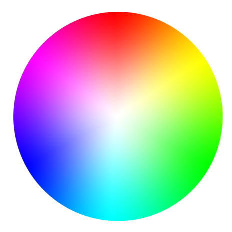
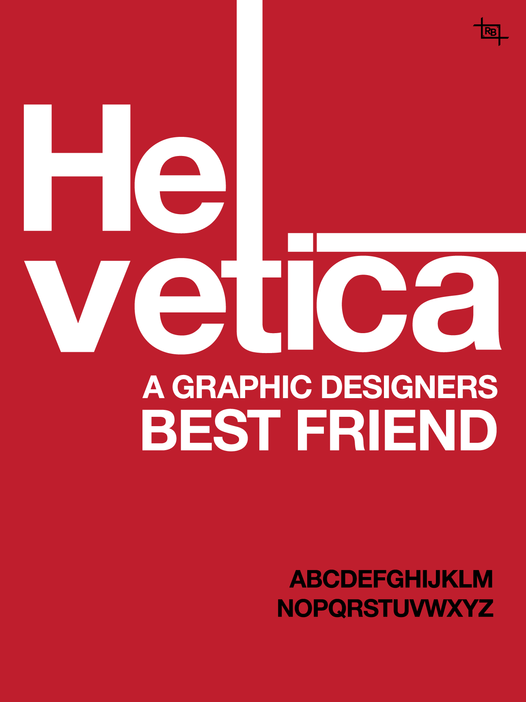

Example:
Hello World!
Example:
Example:
selector { property: value } h1, h2, h3 { font-family: sans-serif } p { color: pink } .content { color: red }#chapter1 { color: blue }a.nav, a.content { color: blue; text-decoration: underline }p#sidebar { font-size: 14px }p.content #diary { font-style: italic }Descendant
h1 strong { text-decoration:underline }Child
body > p { color: purple }Sibling
h1 + p { margin-top: 0 }Attribute
[title=cats] { border: 1px solid black }[title~=cats]or just
[title]
Universal
*.content
*#user
Pseudo
:linkdescribes links that have not been visited.
:visited, :hover, & :active
a:hover { color: red }Color is obviously very important to the design of a site and any colors that are not part of images or other media objects will be described as properties and values in CSS selectors.
Color on the web and computer screens is always different from color that you see in print. Print colors are usually less bright and less saturated. If you are used to designing on paper this is important to note. Most of us are familiar with the way colors looks on a screen.
Color is very difficult to master as a graphic designer. It is very subjective and dynamic. Simple color schemes usually work best for websites. I actually prefer monochromatic schemes.
Web color is based on RGB, and the additive color wheel. Additive means that if you add all colors together you get white. The absence of color is black. Pigment in the real world works the opposite way.
Color is defined by hue, saturation and brightness. This is referred to as HSB. RGB does not do a good job of describing these elements. It is very difficult to design with RGB. HSB is much easier, but not used on the web. That's why its always good to work with color in Photoshop or a scheme editor, so you can really see what you are doing. Using RGB should be the last step.
Some design resources:
Writing color in CSS
red, black, white, blue, purple, gray, gold, etc... Here's a list: Color names
body { color: #ff69B4 } (this is hot pink)rgb(255,0,0), Green:
rgb(0,255,0), Blue:
rgb(0,0,255).
Web safe.
Not all colors are web safe. Most monitors these days can display millions of colors easily. It's not that important anymore, mostly for old machines/displays. Here's a list of ones that are: Web safe.
Typography is just as complex and important as color. It's simpler on the web than in print, but still pretty complex. Simple font schemes are the best. It rarely works to have more than one font on a single page. The trick is choosing the right font.
I tend to default to sans-serif font faces. This means fonts with out the little feet. Helvetica is perhaps the most popular example. The font of this page is Helvetica.
Serif fonts are also great. Times New Roman is very familiar (though not the font used by the New York Times (which is Georgia)).
When designing with CSS, we have tons of attributes and values to style our fonts. We can choose the size, decoration, line height, font family, color and much more. If you're really into fonts, there's a crazy amount of info here: Fonts. If you're like me, you stick with a couple of decent fonts, and adjust their properties accordingly.
I will probably say this a lot, but line-height is probably the most underrated property. It's very important for readability.
The default font families supported on the web are: serif, sans-serif, Arial, Comic Sans, Courier New, Georgia, Impact, Lucida Console, Palatino, Tahoma, Times New Roman, Trebuchet, Verdana.
You can embed other fonts on your webpage. This can create longer loading time, but its probably worth it in most cases. Google hosts a lot of fonts, which makes this very easy: Google Fonts. I used the Google Font "Creepster" for the links on this page.
More on Typography